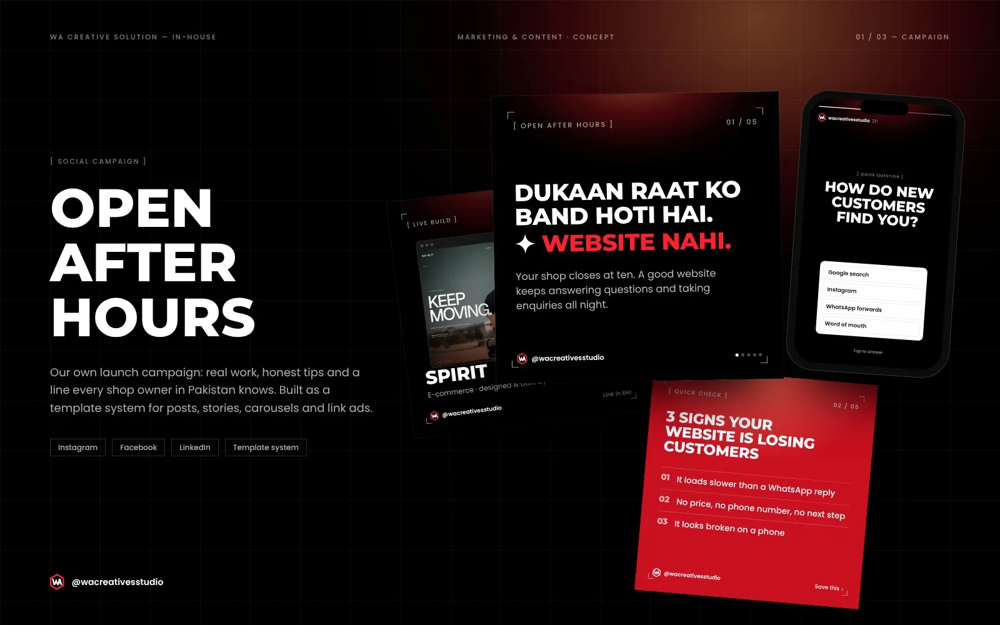

Open After Hours
WA Creative Solution's own social launch campaign, built around a line every shop owner knows.
- Discipline
- Social media campaign
- Scope
- Campaign concept, Social media design, Content pillars, Template system, Copywriting
- Type
- Self-initiated concept project

Overview
An in-house social campaign for Instagram, Facebook and LinkedIn. The idea is simple: a shop closes at night, a good website doesn't. It runs as a template system of feed posts, carousels, stories and link ads, built around four content pillars.
Challenge
Small businesses scroll past agency ads about digital transformation. The campaign had to sound like the people it is for, show real proof instead of claims, and be easy to produce every week.
Solution
A Roman Urdu hook, "Dukaan raat ko band hoti hai. Website nahi.", with plain English underneath. Four pillars rotate through the feed: real work, checklists owners save, process steps and local moments like Eid. Every format shares one grid, corner marks, Montserrat headlines and a single red word.
Colour palette
- Black#000000
- Signal red#FF202D
- Deep red#C81020
- White#FFFFFF
Want something like this for your brand?
Start a project